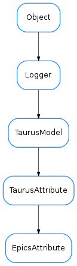

EpicsAttribute¶

-
class
EpicsAttribute(name, parent, storeCallback=None)[source]¶ Bases:
taurus.core.taurusattribute.TaurusAttributeA
TaurusAttributethat gives access to an Epics Process Variable.See also
Warning
In most cases this class should not be instantiated directly. Instead it should be done via the
EpicsFactory.getAttribute()-
decode_epics_evt(evt)[source]¶ Decodes an epics event (a callback keywords dict) into the expected taurus representation
-
encode(value)[source]¶ encodes the value passed to the write method into a representation that can be written in epics
-